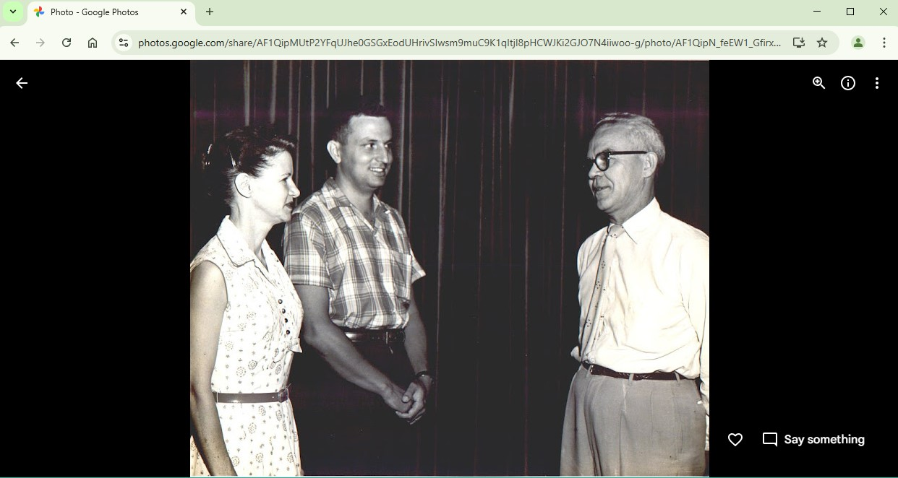

When viewing an image in one of the Galleries, it's not hard to navigate to the relevant entry in the Notes page. First click on the "i" in the upper right corner of the image to reveal its name. Then search in the Notes for the image name.
For example, say you are viewing this image in the Gallery for Dad's Photos:

Clicking on the "i" reveals the image name to be "career--awards--awd57.jpg". Open the Notes for Dad's Photos using the provided link. Use your browser's "find" function (usually cntl-f) to search for "awd57" in the Notes. That leads to an entry for this image: "Mr. Owsley, Alice Livingston, Jerry 1957."
When searching, use only the part of the image name to the right of the last "--" in the name, and don't include the ".jpg" extension.
In general, there might be multiple occurences of the image name in the Notes. Just scroll through each occurence until you find the one that describes the image.
If you're comfortable using your browser's copy/paste function, you can copy the image name from the Gallery and paste it into the find bar of the Notes.
The Notes page includes links to most of the images in the Gallery. To find images about a specific subject, search the Notes page for occurrences of the subject, then click on the related links. For example, to find images of Nameless the cat, search the Slides Notes page for "nameless", and you'll find many occurrences with linked images.